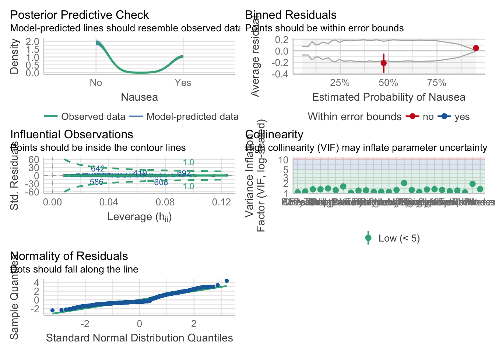

library(parsnip) #Had to load this separately due to error message# Helper packages for visualizatioblibrary(readr) # for importing datalibrary(broom.mixed) # for converting bayesian models to tidy tibbles
Warning: package 'broom.mixed' was built under R version 4.2.3
library(dotwhisker) # for visualizing regression results
Warning: package 'dotwhisker' was built under R version 4.2.3
library(rpart)
Attaching package: 'rpart'
The following object is masked from 'package:dials':
prune
#Libraries for model performance comparrison library(performance)
Warning: package 'performance' was built under R version 4.2.3
Attaching package: 'performance'
The following objects are masked from 'package:yardstick':
mae, rmse
library(vip)
Warning: package 'vip' was built under R version 4.2.3
Attaching package: 'vip'
The following object is masked from 'package:utils':
vi
There does not seem to be a major difference in model performance between the uni and multivariate models. Both have a similar observance/predicted line path and Normality of Residuals. The multivariate model does have a “higher” R2 and lower RMSE value.
5. Fitting a logistic model to the categorical outcome (Nausea) using only the main predictor of interest (Vomit).
6. Compares the model results for the categorical model with just the main predictor and all predictors.
Assess Performance
check_model(glm_fit$fit)
check_model(glm_fit_all$fit)

Compare Performance
compare_performance(glm_fit,glm_fit_all)
Warning in predict.lm(object, newdata, se.fit, scale = 1, type = if (type == :
prediction from a rank-deficient fit may be misleading
Warning in predict.lm(object, newdata, se.fit, scale = 1, type = if (type == :
prediction from a rank-deficient fit may be misleading
Warning in predict.lm(object, newdata, se.fit, scale = 1, type = if (type == :
prediction from a rank-deficient fit may be misleading
Warning in predict.lm(object, newdata, se.fit, scale = 1, type = if (type == :
prediction from a rank-deficient fit may be misleading
In this case, it looks like the multivariate analysis had a better performance than the uni-variate. While both had a good observed/predicted line path, the former had better Normality of Residuals.